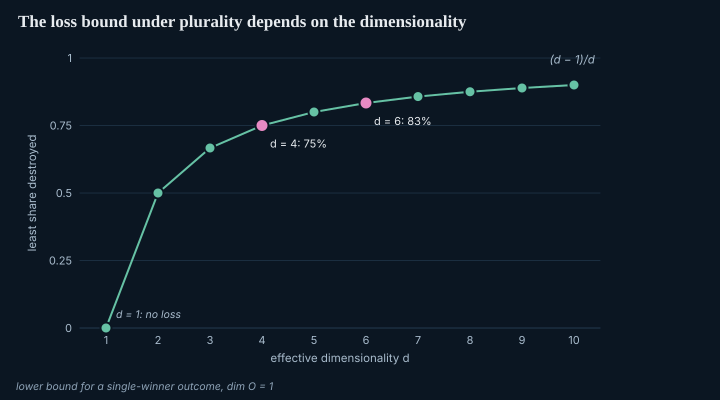

Chapter 18: Open Questions
“The frontier is real, and acknowledging it is more useful than pretending it does not exist.” — Geometric Communication, Preface
RUNNING EXAMPLE — DISTRICT 7
We have followed District 7 for seventeen chapters: from the left-right trap that conceals its six-dimensional reality, through the geometric framework that reveals it, to the institutional reforms that partially recover it. District 7’s voters are better understood now than they were when we began — their manifold positions are estimated, their representation gaps are measured, their suppressed agreements are visible.
But the geometric theory of politics is not complete. This chapter catalogues what we do not know — the open questions at the frontier of the framework. These are genuine questions, not rhetorical ones. I do not know the answers.
Question 1: Can We Measure the Political Preference Manifold from Survey Data?
The six-dimensional structure proposed in Chapter 4 is theoretically motivated and roughly consistent with factor analysis of ANES data. But precise estimation of the manifold — the metric $g_{ij}$, the covariance matrix $\Sigma$, and the curvature tensor $R_{ijkl}$ — requires larger, richer datasets than currently exist.
The ideal instrument would elicit preferences on all six dimensions with enough resolution to estimate: - The metric’s off-diagonal terms (how much does movement on $d_1$ cost in terms of $d_3$?) - The curvature (is the manifold flat in the center and curved near sacred values, as Chapter 4 hypothesizes?) - The time evolution (how does the metric change between elections?)
Designing this instrument is an open problem. Existing surveys (ANES, CES) provide enough data for rough manifold estimation but not for precise metric estimation. The instrument would need to go beyond issue-position questions (which provide point estimates on each dimension) to include trade-off questions (which reveal the metric’s off-diagonal terms) and intensity questions (which reveal the curvature structure).
The computational challenge is also significant. Estimating a Riemannian metric from point data is a problem in manifold learning — a well-studied field in machine learning but one where the estimation error grows with the intrinsic dimensionality and the curvature of the manifold. For a six-dimensional manifold with sacred-value curvature singularities, the estimation may require sample sizes in the hundreds of thousands — far larger than current political surveys provide.
Question 2: What Is the Correct Dimensionality?
Six dimensions are proposed based on theoretical decomposition and rough factor analysis. But the effective dimensionality may vary:
Across electorates: A highly sorted electorate has lower effective dimensionality than an unsorted one, because sorting collapses independent dimensions into correlated ones. The American electorate’s effective dimensionality may have decreased from six (in the 1970s, when party sorting was weak) to four or five (in the 2020s, when $d_1$, $d_2$, and $d_6$ are strongly correlated through party identification).
Across time: New issues add dimensions; resolved issues remove them. Climate change ($d_3$) was not a politically salient dimension in 1960. Institutional trust ($d_5$) was not a major axis of variation in 1990. The dimensionality of the manifold is itself a dynamic quantity.
Across scale: Local politics may have fewer salient dimensions than national politics. A city council election may involve only $d_1$ (local economic policy) and $d_3$ (local environmental issues), with $d_4$ (foreign policy) entirely irrelevant. A presidential election involves all six. Is there a principled method for estimating the effective dimensionality of a specific electorate at a specific time?
The question has practical implications: the Democratic Irrecoverability Theorem’s lower bound on information loss depends on $d$. If the effective dimensionality is 4 rather than 6, the lower bound on information loss under plurality drops from 83% to 75% — still severe, but less so. Getting the dimensionality right matters for both the theory and its applications.

Figure 18.1. The lower bound of the Democratic Irrecoverability Theorem (Chapter 5, Theorem 1(c)) on the share of manifold information a single-winner election destroys, (d − dim O)/d with dim O = 1, against the effective dimensionality d. If d is 4 rather than 6 the bound drops from 83% to 75%, as Question 2 states, so the bound depends on getting d right.
Question 3: Is There a Conservation Law for Democratic Legitimacy?
Note (2026-11-26). Geometric Ethics withdrew “Conservation of Harm” as a conservation law in June 2026 and kept the weaker claim that harm accounting is invariant under re-description. The last paragraph of this section is restated accordingly. The question itself is unchanged and stays open.
Chapter 17 raised the possibility that democratic legitimacy is a conserved quantity under gauge-invariant transformations, by analogy with Noether’s theorem in physics. The analogy is suggestive: legitimacy seems to persist under fair procedures and degrade under unfair ones, just as energy persists under time-translation symmetry and degrades under time-asymmetric perturbations.
But the analogy has gaps:
-
What is the political Lagrangian? Noether’s theorem requires a Lagrangian — an action functional whose stationarity defines the dynamics. In physics, the Lagrangian is well-defined. In economics, the BGE framework provides something Lagrangian-like (the behavioral friction functional). In politics, the corresponding object has not been specified. What is being optimized by democratic institutions? Is there a single functional whose extrema define democratic equilibria?
-
What is the conserved current? Even if a political Lagrangian can be defined, Noether’s theorem produces a specific conserved current for each symmetry. What is the current associated with voter anonymity? With option neutrality? These are not straightforward questions.
-
Is the analogy misleading? Physical conservation laws are exact: energy is exactly conserved in a closed system. Political legitimacy, even if “conserved” in some sense, is likely conserved only approximately — with dissipation from practical deviations from gauge invariance (corruption, voter suppression, ballot design effects). An approximate conservation law is still useful, but it requires different mathematical machinery than an exact one.
The question is genuinely open. The series has produced conservation-like results in ethics (representation-invariance of harm accounting under $U(1)_H$ symmetry) and economics (conservation of value under re-description), but these were possible because the domain Lagrangians were specified. The political Lagrangian remains to be constructed.
Question 4: Can Deliberation Scale?
Deliberative democracy recovers manifold structure (Chapter 14), but citizens’ assemblies serve hundreds, not millions. The scale limitation is fundamental: manifold exploration requires interaction, and interaction does not scale linearly.
Several approaches to scaling were discussed in Chapter 14 — cascaded assemblies, structured online deliberation, AI-facilitated deliberation — but none has been demonstrated at the scale of a national electorate. The open questions:
-
Does the centripetal effect survive scaling? Fishkin’s data shows that small-group deliberation moves participants toward the manifold center of mass. Does the effect hold for groups of thousands? Of millions? Or does the centripetal force weaken as the group grows and the interpersonal contact diminishes?
-
Can AI replace human facilitation? The facilitator’s role in deliberation is to ensure balanced information provision, manage group dynamics, and prevent dominance by high-status participants. Can a large language model perform these functions? The risks are significant: an AI facilitator that subtly favors certain positions (due to training data bias) would introduce systematic manifold distortion that participants could not detect.
-
Is online deliberation deliberation? Face-to-face interaction drives much of the affective polarization reduction observed in deliberative polls. Online interaction, even with structured turn-taking and balanced information, may not produce the same interpersonal contact that corrects the metric distortion. If the correction requires physical presence, deliberation may be inherently unscalable.
Question 5: What Is the Geometry of International Politics?
Each nation has its own political preference manifold — its own six-dimensional (or differently dimensioned) space of political preferences. International cooperation requires finding shared submanifolds across nations: regions where national preferences overlap. International conflict occurs when national manifolds are disjoint on critical dimensions.
The geometric framework for international politics would need to address:
-
Product manifolds: The international political space is the product of national manifolds, $\mathcal{P}_1 \times \mathcal{P}_2 \times \cdots \times \mathcal{P}_n$. This product manifold has very high dimensionality, and the distances on it are not straightforward (how do you compare positions on the French economic dimension with positions on the Japanese environmental dimension?).
-
Treaty formation as submanifold intersection: A treaty is an agreement between nations on specific dimensions — a shared region of the product manifold. Treaty negotiation is the search for this shared region. Treaty failure occurs when no shared region exists on the relevant dimensions.
-
International institutions as contraction operators: The UN, the EU, NATO, the WTO — all are contraction operators on the international product manifold, aggregating national preferences into collective decisions. The Democratic Irrecoverability Theorem applies to these contractions, suggesting that international institutions face the same dimensional loss as national voting systems, compounded by the higher dimensionality of the international space.
Whether the geometric framework provides useful tools at the international scale is an open question. The framework may break down because the assumption of a shared manifold — a common political space on which all actors can be located — may not hold across nations with fundamentally different political structures.
Question 6: How Does the Manifold Evolve?
Political preferences are not static. The manifold itself changes over time as new issues arise, old issues are resolved, generational replacement alters the preference distribution, and economic and cultural changes reshape the covariance structure.
Is there a political analogue of the Ricci flow — a natural evolution equation that governs how the political metric changes over time? The Ricci flow, in differential geometry, evolves a Riemannian metric in the direction of its Ricci curvature: regions of high curvature flatten out, regions of low curvature steepen. The flow tends toward a metric of uniform curvature — a “geometrically natural” state.
A political Ricci flow would describe how the political metric evolves: sacred-value curvature singularities might smooth out over generational time (issues that were once non-negotiable become negotiable as the older generation exits), while new singularities might form on previously flat regions (issues that were once uncontroversial become sacred values for a new generation). The dynamics would be driven by media coverage (which reshapes the perceived metric), electoral outcomes (which reinforce or weaken certain axes of variation), and demographic change (which shifts the population distribution on the manifold).
Whether such a flow equation exists — and whether it has predictive power — is entirely open.
Question 7: Can the Political Bond Index Be Adopted as a Legal Standard?
The efficiency gap has been litigated as a gerrymandering metric, notably in Gill v. Whitford (2018), where the Supreme Court declined to adopt it as a standard but did not rule out manageable metrics in principle. Could the Political Bond Index serve as a more robust legal standard?
The $BI$ has several advantages over the efficiency gap: it operates on the full manifold (detecting multi-dimensional gerrymandering that the efficiency gap misses), it is grounded in a mathematical framework (the Geometric Series), and it provides dimension-specific diagnostics (which dimensions are affected by the gerrymander?).
But it also has disadvantages: it requires manifold distance estimation (which requires survey data, not just vote totals), its computation is more complex, and its results depend on the assumed dimensionality and metric structure — choices that could be contested in litigation. Courts require simplicity, reproducibility, and a clear threshold. The $BI$ provides mathematical rigor but not necessarily legal administrability.
Bridging this gap — between geometric sophistication and judicial administrability — is an open institutional design problem. The solution may involve simplified versions of the $BI$ that use readily available data (voter surveys plus election returns) and have clear thresholds (a $BI$ percentile rank above 95% in the ensemble distribution constitutes a presumption of gerrymandering).
The Circle Closes
This chapter closes the Politics volume of the Geometric Series. Twelve books in total. From the mathematical toolkit of Geometric Methods through the parent framework of Geometric Reasoning, through eight domain instantiations — ethics, economics, law, cognition, communication, medicine, education, aesthetics — and now politics.
The series began with a simple observation: scalar reduction destroys geometric structure, and the destruction is irreversible. The observation has been applied across ten domains. In every domain, the same pattern holds: multi-dimensional realities are compressed to scalars, the compression is lossy, the loss is irrecoverable, and the consequences are predictable — and preventable, if the geometry is understood.
Politics is the final domain and, in many ways, the most important. The other domains affect individuals — a patient, a student, a moral agent, a litigant. Politics affects everyone. The dimensional collapse of democratic institutions is not a theoretical curiosity. It is a structural feature of the systems that govern billions of lives. The manifold is real. The contraction is severe. The information loss is massive. And the lost information is precisely the information that a democracy needs to represent its citizens faithfully.
The geometry was always there. The left-right axis prevented us from seeing it.
District 7 — our fictional but realistic congressional district — is every district. Its voters are multi-dimensional. Its institutions are one-dimensional. The mismatch is the source of democratic dysfunction, and the resolution begins with seeing the geometry.
The circle closes.
DISTRICT 7 — FINAL CHAPTER SUMMARY
We have surveyed the open questions at the frontier of the geometric theory of politics: manifold measurement, dimensionality estimation, legitimacy conservation, deliberation scaling, international political geometry, manifold evolution, and the legal adoption of the Bond Index. These are genuine open problems — the frontier of a framework that this book has developed but not completed.
District 7 will continue to vote, to deliberate, to draw its district lines, to consume its media. The geometry of its preferences will continue to be compressed by its institutions. But perhaps, if the framework this book offers gains traction, the compression will be recognized for what it is — a geometric operation with measurable costs — and the institutions will be redesigned, incrementally and pragmatically, to preserve more of the manifold that democracy needs to see.
The voters of District 7 are not left or right. They are not polarized or united. They are not swing voters or base voters. They are points on a manifold — each one a unique position in a six-dimensional space of values, priorities, and commitments. The left-right axis could never hold them. The manifold can.